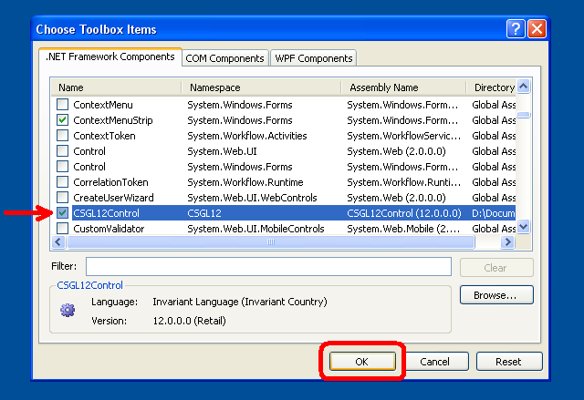

C# OpenGL بينية
Windows لنظام التشغيل
Colin Fahey

CSGL12Control على Form ، تظهر "صورة النمطي هندسي متكرر" تظليل بكسل GDI+ ووضع برنامج لنسخ الملمس

CSGL12Control اثنين من الحالات على Form يظهر تظليل بكسل البرامج والقوام

وقال ان يتجول 3D! سطح المكتب ، ويمكن أن تحرك المؤشر
1. البرامج
هذا الإصدار من هذه الوثيقة ينبغي أن تدرج مع "CSGL12" البرمجيات. إذا كنت لا تستطيع العثور على البرمجيات ، وبعد ذلك ، يرجى زيارة الموقع التالي على شبكة الإنترنت لتحميل البرنامج :
http://colinfahey.com.
2. كل من C# الكمبيوتر الشفرة في واجهة C# OpenGL (CSGL12) في "المجال العام"
لقد كتبت كل من C# الحاسوب ضمن شفرة C# OpenGL بينية (CSGL12).
أعلن كل من C# الكمبيوتر الشفرة داخل C# OpenGL بينية (CSGL12) لتكون في متناول "الجمهور."
ولذلك ، فإن الكمبيوتر الشفرة يمكن استخدامها في أي غرض (تجارية أو خاصة) ، وبلا أجر ، ودون قيود ، ودون التزامات ، ودون الاعتراف المؤلف الأصلي.
الشفرة يمكن تعديله ، أو أجزاء إعادة استخدامها ، من دون قيود ، ودون التزامات ، ودون الاعتراف المؤلف الأصلي.
مثال برامج تشمل كمية صغيرة من الحواسيب في القانون) على وجه التحديد ، "shader قانون الكمبيوتر) التي كتبها اناس آخرين." هذه المدونة ليست بينية داخل نفسه ، ويمكن إزالة مسلي. هذا هو مجرد رمز للتدليل على بساطة باستخدام واجهة الاستخدام لخلق "وshader" البرامج.
3. مقدمة
"CSGL12" هي عبارة عن مجموعة من الملفات C# شفرة الكمبيوتر الذي ينفذ بينية الى رسومات OpenGL مكتبة (بما في ذلك جميع التمديدات OpenGL حتى عام 2007) لWindows نظام التشغيل.
فإن C# ملفات الكمبيوتر الشفرة في ال "CSGL12" تجعل من السهل OpenGL إضافة إلى الاستفادة من أي C# / .NET البرمجيات مع "Form" (مثال "System.Windows.Forms.Form").
فإن "CSGL12" جمع ملفات الكمبيوتر مدونة تتضمن ملف اسمه "CSGL12Control.cs" ، التي تعرف باسم طبقة "CSGL12Control" ، المستمدة من "System.Windows.Forms.Control". كل من يمثل "CSGL12Control" مستقلة OpenGL رسم المنطقة. فمن السهل جدا إضافة عدة حالات CSGL12Control لForm (مثال System.Windows.Forms.Form).
4. خصائص واحتياجات "CSGL12"
الشفرة فقط لWindows أنظمة التشغيل التي تدعم .NET 2.0 Framework (Windows 2000, Windows XP, Windows Vista, Windows 7)
الشفرة ويمكن باستخدام "Microsoft Visual C# 2008 Express Edition" (مجمع حرة) ، أو ما شابه ذلك C# المجمعين.
وينص هذا القانون الذي يجري بناؤه مع بناء "[X] Allow unsafe code" الخيار الأمثل حتى صورة ونسخ البيانات ويمكن استخدام وظائف. إذا كنت خبيرا C# مبرمج ستتمكن من السهل التعرف على أجزاء من قانون C# التي تتطلب "unsafe" وتعطيل الخيار إذا المنشود أو المطلوب. نسخ بيانات الصور 10 مرات أسرع باستخدام رمز "unsafe" من البديل ، وهذا هو السبب في ذلك إلى استخدام القانون. إذا كنت بناء DLL التي تحتوي على كل من "unsafe" الشفرة ، ثم يستخدم هذا المشروع لا يتطلب DLL يجري بناؤها مع "unsafe" الخيار ، وحتى تتمكن من أن يستنتج من عدم وجود خيار "unsafe" في المشروع ، ولا تعبر بأي حال من خارج سلامة (DLL لأن العديد من الملفات التي تستخدم ضمنا أو صراحة من خلال هذا البرنامج يحتوي على رمز "غير آمنة)."
الشفرة ويمكن تجميعها واستخدامها من قبل أي من الحالات التالية :
Microsoft Visual C# 2008 Express Edition
Microsoft Visual Studio 2008
Microsoft .NET 3.5 SDK
SharpDevelop
Mono Project
قانون يتيح تمديد معظم OpenGL (خلال السنة 2007) ، بما في "vertex shaders" و"pixel shaders".
وينص القانون على 1570 المهام المتعلقة OpenGL :
336 GL functions
51 GLU functions
19 WGL functions
1164 extensions
المدونة يعرض بعض الصيغ البديلة لل1570 مهام المعلم أنواع مختلفة ، للراحة.
وتحدد هذه المدونة أكثر من الثوابت 3244 لOpenGL.
قانون يجعل من الممكن وضع OpenGL متعددة السياقات ، موحية جميع مستقل ، وعلى أي "Form".
النقر على "CSGL12Control" يعطيها "التركيز على المدخلات" ، مما يسمح لاحقا لوحة المفاتيح والفأرة عجلة المدخلات. المؤشر النقرات والحركات عندما تلقى المؤشر ضمن مستطيل مجال مثال "CSGL12Control".
وتشمل مهام هذه المدونة لبيان كيفية القيام ببعض المهام OpenGL في عام C# و.NET.
مدونة لجميع القوائم OpenGL الثوابت والمهام حسب الترتيب الأبجدي في "class GL" في "GL.cs" ، مما يجعل من السهل تحديد ما إذا كانت أي وظيفة ثابتة أو مفقود (وهو أمر غير محتمل ، باستثناء التمديد اتخذ بعد سنة 2007).
على سبيل المثال برامج تبين كيفية القيام GDI+ السحب على Bitmap ، ثم كيف أن نسخة Bitmap لOpenGL الملمس.
هذا النص يمكن GDI+ الرسم وغيرها من القدرات الى الاسهام في تحقيق OpenGL الساحة.
وقد GDI+ Bitmap يمكن تحديثها وتحميلها الى OpenGL الملمس كلما مرة واحدة في كل OpenGL الاطار.
على سبيل المثال برامج تبين كيف تختار من بين عدة "pixel shader programs" مختلفة في حين ان البرنامج الحالي.
على سبيل المثال برامج تظهر كيف يكتب OpenGL مصدات لملفات الصور (JPG ، BMP ، GIF ، PNG).
الصحافة Shift + 0 (التحول من الصفر) لكتابة OpenGL فاصلة لملفات الصور.
مثال يوضح كيف جمع مدونة "GL.cs" في لDLL الملف ، ثم اضاف ان DLL الملف إلى مشروع آخر ، لا يمكن منع Microsoft مدونة المحررين) مثل Microsoft Visual C# 2008 Express Edition ، الخ) مع "IntelliSense" (السياق تراعي إنجاز مدونة) من أن تصبح في كثير من الأحيان وبشكل مستمر غير مستجيب (التوقف مرارا كثيرة ثانية ، مما يجعل من غير صالحة تماما المحرر). وجود الملف "GL.cs" مباشرة في أي مشروع يتم تحريره من قبل محرر مدونة Microsoft ليس عمليا ، ما لم يكن الشخص على استعداد لتحمل بطء المحرر. وقد أثرت هذه المشكلة Microsoft Visual Studio 2003 ، 2005 ، 2008 ، ومن المحتمل أن تؤثر على النسخة 2010 أيضا.
مثال رمز يدل على استخدام العديد من حالات "CSGL12Control" على "Form".
على سبيل المثال قانون يتضمن مدونة لتقديم 3D! أن يتجول سطح المكتب من Windows.
5. وتشمل الأمثلة على البرامج مع "CSGL12"
5.1 "CSGL12DLL"
اسم المشروع "CSGL12DLL" تنتج DLL اسمه "CSGL12DLL.dll" الملف الذي يحتوي على "class GL" (المحددة في C# الملف "GL.cs").
وضع "class GL" في لDLL الملف ، ثم أن DLL تستخدم في المشاريع الأخرى التي تستخدم "class GL" ، يساعد على تجنب هذه المشكلة بالغة مع جميع Microsoft مدونة المحررين مع IntelliSense الميزة. C# باستخدام GL.cs الملف مباشرة في المشروع أن يسبب أي محرر مدونة Microsoft مع ميزة IntelliSense تستجيب تماما لتصبح غير صالحة للاستعمال ، وتكاد تكون متواصلة بسبب عدم كفاءة من IntelliSense ميزة (وحقيقة أن من الواضح أن لبنات IntelliSense برنامج الخيط الرئيسي للمحرر .
إذا كنت تستخدم محرر مدونة C# التي لا تنتجها Microsoft (على سبيل المثال ، "SharpDevelop" ، "MonoDevelop" ، الخ) ، ثم يمكنك ببساطة إدراج ملف "GL.cs" مباشرة في المشاريع الخاصة بك ، وأنت من غير المرجح أن تكسب أي فائدة من استخدام "CSGL12DLL.dll".
5.2 "CSGL12Control"
اسم المشروع "CSGL12Control" تنتج DLL اسمه "CSGL12Control.dll" الملف الذي يحتوي على "class CSGL12Control" (المحددة في C# الملف "CSGL12Control.cs").
وضع "class CSGL12Control" في لDLL الملف ، ويمكن أن "Control" (أي فئة مشتقة من "System.Windows.Forms.Control") يمكن ان تضاف الى "Toolbox" من Microsoft Visual C# 2008 Express Edition (والمحررين C# مماثلة). بعد "CSGL12Control" في "Toolbox" يجعل من السهل على أي شخص أن يضيف مثال "CSGL12Control" ل"Form" في "Designer" (على سبيل المثال ، يمكن للشخص لمجرد استخدام المؤشر لاختيار واسحب مثال "CSGL12Control" من "Toolbox" ل"Form").
فإن وجوه "CSGL12Control" يدير OpenGL رسم السياق. تعدد حالات "CSGL12Control" يمكن أن تتعايش على "Form".
5.3 "CSGL12Example1"
اسم المشروع للتنفيذ "CSGL12Example1" ينتج ملف البرنامج (EXE) "CSGL12Example1.exe" اسمه. يستخدم البرنامج "CSGL12DLL.dll" و"CSGL12Control.dll" لعرض مثال CSGL12Control ووضع مكعبات باستخدام OpenGL.
البرنامج يدل على استخدام الأربعة المختلفة "pixel shaders" "(النمطي هندسي متكرر والطوب والخشب والكرتون)."
البرنامج يدل أيضا استخدام "GDI+" ، .NET وضع المكتبة ، لوضع نص وغيرها من الأشكال على وجوه "Bitmap" (أ "GDI+" جوه) ، ثم نسخ البيانات من الصورة التي "Bitmap" الى "texture" في OpenGL ، مما يسمح لوضع الصورة "GDI+" بها للظهور في OpenGL السحب. هذه القدرة هي مفيدة للغاية لأنه يفتقر OpenGL الكثير من 2D عثر عليها في رسم ملامح "GDI+" و2D وضع مماثل libaries.
5.4 "CSGL12Example2"
اسم المشروع للتنفيذ "CSGL12Example2" ينتج ملف البرنامج (EXE) "CSGL12Example2.exe" اسمه. يستخدم البرنامج "CSGL12DLL.dll" و"CSGL12Control.dll" لعرض حالتين من CSGL12Control كل منها يستمد مكعب باستخدام OpenGL.
البرنامج له "SplitContainer" "Control" على "Form". كل واحدة من منطقتين لل"SplitContainer" يحتوي المثال من CSGL12Control. وهكذا ، يمكن للشخص تعديل موقف الانقسام بين حالتين من CSGL12Control. وهذا يدل على مرونة من CSGL12Control.
واحدة من حالات CSGL12Control الأحداث يبعث على مجموعة من المتعاملين في حالة من حالات "CSGL12Example2Handler1.cs" ، والذي يستخدم نفس الرمز "CSGL12Example1Handler.cs" كما في مثال "CSGL12Example1" المشروع. لذلك ، وهي واحدة من الحالات CSGL12Control يلفت مكعب واحد "pixel shader" اختيارها من بين أربعة "pixel shaders" المتاحة.
المثال الآخر من الأحداث CSGL12Control يرسل الى مجموعة من المتعاملين في حالة من حالات "CSGL12Example2Handler2.cs" الذي يستمد مكعب باستخدام نسيج الصورة (أو إذا كان نمط "اللوحة" صورة ملف اسمه "image.jpg" لا يوجد).
5.5 "CSGL12Avatar"
اسم المشروع للتنفيذ "CSGL12Avatar" ينتج ملف البرنامج (EXE) "CSGL12Avatar.exe" اسمه. يستخدم البرنامج "CSGL12DLL.dll" و"CSGL12Control.dll" رسم باستخدام مكعبات OpenGL على "Form" بدون حدود ، والقائم على الشفافية ومكن اللون ، رسم 3D! أن يتجول فإن Windows المكتبي المجال.
نقل avatar يمكن النقر وجره الى مكان جديد باستخدام المؤشر. النقر المزدوج فوق avatar سيجعل تتلاشى. وإن كان مجرد رمز وتوجه مكعب ، OpenGL يمكن استخدامها لوضع أشياء أخرى.
حالات متعددة من البرنامج! يمكن البدء. وهكذا ، فإن العديد من الحالات! المستقلة في وقت واحد يمكن أن تطوف Windows سطح المكتب. هذا شيء مضحك. خبير C# مبرمج قد تتمتع إيجاد سبل لتنسيق الأنشطة في كثير من الحالات من هذا القبيل!.
ولسوء الحظ ، فإن المعدل الذي Window مع موضوع الشفافية تحديث على الشاشة هي أبطأ بكثير من المعدل الذي يمكن الاستفادة منه OpenGL. ! إلا فإن التحديثات 10 مرات في الثانية الواحدة. لا أعرف ما اذا كان ذلك يمكن تحسينها.
5.6 "CSGL12BuiltExecutableExamplesForReference"
الدليل يتضمن DLL اسمه "CSGL12BuiltExecutableExamplesForReference" الملفات وملفات EXE التي تنتجها كل من الأمثلة على المشاريع. هذه الملفات هي على النحو المنصوص عليه في اشارة حتى الملفات يمكن اختبارها على الفور ، حتى لو كان الشخص لا يملك القدرة على تجميع مختلف المشاريع المقدمة من C# المدونة.
5.7 "CSGL12UsefulCode"
الدليل يتضمن C# اسمه "CSGL12UsefulCode" الملفات التي قد تكون مفيدة للاشخاص الذين يريدون القيام بعمليات السحب شائعا OpenGL. الدليل يتضمن أيضا DLL ملفات "CSGL12DLL.dll" و"CSGL12Control.dll" للراحة.
المدونة في هذا الدليل يحدد class أنواع مختلفة ، مثل Color4f ، Vector3f ، Matrix4x4f ، Triangle ، Mesh ، ImageData ، Texture ، ShaderProgram ، الخ. الشفرة فعالة بشكل معقول ، ولكن ليست سوى رمز إلى إلهام الناس من تطوير قدراتها في التنفيذ.
6. CSGL12 ملفات
فإن "CSGL12" جمع C# الكمبيوتر الشفرة ملفات تتضمن ملفات مبين في الرسم البياني التالي :

فإن "CSGL12" جمع C# الكمبيوتر الشفرة ملفات تتضمن الملفات ويبين هذا الرسم البياني.
فإن البرمجيات "CSGL12" كما يشمل مشاريع لإنشاء دولتين DLL الملفات ("CSGL12DLL.dll" و"CSGL12Control.dll") مبين في الرسم البياني. هذين DLL الملفات التي يمكن أن تنشأ لجعله أكثر ملاءمة لخلق برامج التي OpenGL ، ولكن من المحتمل ايضا لخلق برامج تستخدم فقط C# صورة مباشرة.
7. "namespace CSGL12" وأنواع "class"
فإن "CSGL12" جمع C# مدونة ملفات الكمبيوتر وتعرف "namespace CSGL12" و"class" أنواع مبين في الرسم البياني التالي :

فإن "CSGL12" جمع C# مدونة ملفات الكمبيوتر وتعرف "namespace CSGL12" و"class" أنواع المبينة في هذا الرسم البياني.
وثمة برنامج وضع OpenGL لا يمكن أن تنشأ إلا باستخدام "class GL" (باستخدام C# الملف GL.cs مباشرة ، أو عن طريق استخدام DLL الملف CSGL12DLL.dll التي تتضمن أيضا "class GL"). ومع ذلك ، باستخدام "class CSGL12Control" (عن طريق استخدام C# الملف CSGL12Control.cs مباشرة ، أو عن طريق استخدام DLL الملف CSGL12Control.dll التي تتضمن أيضا "class CSGL12Control") يجعل OpenGL مشيرا الى وضع Form (System.Windows.Forms.Form) سهلة ومريحة.
فإن C# الطبقات Color4f ، CSGL12Support ، ImageData ،... ، في اسفل الرسم وتقدم فقط للراحة. تلك الفئات أن يسهل إيجاد برامج رسم باستخدام OpenGL. ومع ذلك ، فقد سبق لها أن الطبقات إجراء العمليات في تلك الفصول الدراسية ، أو قد تختار لخلق طبقات مماثلة أداء عمليات مختلفة أو أكثر فعالية. وتقدم هذه الفصول على سبيل المثال وجود رمز معين من التصميم والتنفيذ.
8. باستخدام واحد "CSGL12Control" على System.Windows.Forms.Form
8.1 هيكل البرنامج
ويظهر الرسم البياني التالي كيف يمكن لهذا البرنامج مع System.Windows.Forms.Form يمكن استخدام واحد لرسم "CSGL12Control" مع OpenGL. ويوضح المخطط CSGL12 مختلف الملفات المستخدمة لبناء البرنامج.

وهناك برنامج واحد باستخدام "CSGL12Control" على System.Windows.Forms.Form
8.2 Microsoft Visual C# استخدام البرنامج لخلق
(1) البداية Microsoft Visual C#.
وفي (2) ، حدد "File" -> "New Project...".
(3) وفي "New Project" مربع الحوار الذي يظهر ، حدد "Windows Forms Application" ، واختيار اسم لهذا البرنامج ، واضغط على "OK".
(4) انقاذ "Solution" مباشرة من خلال اختيار "File" -> "Save All". مربع حوار مع عنوان "Save Project" سوف تظهر ، مما يمكن لك أن تحدد اسم المشروع ، دليل المواقع ، "والحل" اسم لهذا المشروع. تذكر دليل الموقع بحيث انك مستعد لتعليمات المقبل. اضغط على زر "Save" لانقاذ المشروع.
(5) نسخ كافة الملفات من دليل "CSGL12UsefulCode" في "CSGL12" البرمجيات إلى دليل يحتوي على شفرة المصدر ملفات المشروع الجديد (أي ، دليل يحتوي على ملفات "Form1.cs" ، "Form1.Designer.cs" ، "Program.cs" ، الخ) ، على ان الملفات "CSGL12DLL.dll" ، "CSGL12Control.dll" ، "Color4f.cs" ، "CSGL12Support.cs" ، الخ ، إلى جانب ملفات المشاريع الجديدة "Form1.cs" ، الخ.
(6) وفي Microsoft Visual C# ، إضافة إلى ملفات "CSGL12" C# المشروع. في ، حدد "Project" -> "Add Existing Item..." و"Add Existing Item" في مربع الحوار ، واختيار كل من C# الملفات من CSGL12 البرمجيات ("Color4f.cs" ، "CSGL12Support.cs" ، "ImageData.cs" ،...).
(7) وفي Microsoft Visual C# تضاف "إشارات" إلى DLL ملفات "CSGL12DLL.dll" و"CSGL12Control.dll". في ، حدد "Project" -> "Add Reference..." و"Add Reference" في مربع الحوار ، اختر "Browse" علامة التبويب ، وحدد الملفات "CSGL12DLL.dll" و"CSGL12Control.dll" من مشروع دليل المصدر الملف ، واضغط على "OK".
(8) وفي Microsoft Visual C# ، تضاف "CSGL12Control" إلى "Toolbox". في ، حدد "Tools" -> "Choose Toolbox Items...". "Choose Toolbox Items" في مربع الحوار الذي يظهر ، اضغط على زر "Browse..." ، والذهاب الى مشروع دليل شفرة المصدر ملفات ، وحدد "CSGL12Control.dll". اضغط على زر "OK".
(9) وفي Microsoft Visual C# ، عرض "Toolbox". في ، حدد "View" -> "Toolbox". في "Toolbox" ، اذهب إلى الباب اسمه "General" ، وتحديد مكان يدعى بند "CSGL12Control". باستخدام المؤشر ، انقر على اسم "CSGL12Control" البند وجرها إلى "Form" في "Design" الرأي.
(10) وفي Microsoft Visual C# ، في "Form" "Design" الرأي ، نقل "CSGL12Control" المثال على "Form" وتعديل العرض والارتفاع. في لوحة "Properties" ، وحددت قيمة "Anchor" لتشمل "Top, Bottom, Left, Right" إذا كنت تريد التحكم لتغيير حجم وفقا للتغيرات في حجم نافذة البرنامج.
(11) وفي Microsoft Visual C# ، تغيير خصائص المشروع حتى تتمكن من استخدام رمز "unsafe". في ، حدد "Project" -> "[project] Properties...". حدد مربع الحوار الذي يظهر ، اختر تبويبة اسمه "Build" ، والتحقق من المربع اسم "[X] Allow unsafe code". إغلاق مربع الحوار خصائص المشروع.
(12) وفي Microsoft Visual C# ، إضافة إلى ملف جديد C# المشروع. في ، حدد "Project" -> "Add New Item...". في مربع الحوار "Add New Item" اسمه ، اختيار قالب "Class" اسمه ، واختيار اسم للفئة جديدة من نوع ، مثل "CSGL12MyHandler.cs" ، ثم اضغط على زر "Add". النظر في مشروع انشاء ما سمي "CSGL12Example1" المثال ، في ملف اسمه "CSGL12Example1Handler.cs" ، وكمثال على كيفية مدونة "CSGL12MyHandler.cs" التي ينبغي أن تكتب.
(13) وفي Microsoft Visual C# ، في "Solution Explorer" ، انقر على "Form1". في ، حدد "View" -> "Code" (F7 أو الصحافة ، أو انقر بزر الماوس الأيمن فوق "Form1" واختيار "View Code". الشفرة في ملف وسوف تظهر في "Form1.cs" المحرر. تعديل مدونة في ملف "Form1.cs" إلى أن تكون مماثلة لهذه المدونة في ملف "CSGL12Example1Form.cs" في المشروع "CSGL12Example1" في "CSGL12" البرمجيات. على وجه الخصوص ، من أجل خلق متغير مثال مناول الحدث الطبقة (على سبيل المثال ، "CSGL12MyHandler") ، ثم تضاف أساليب تلك الفئة المثال ما حدث بالنسبة لمختلف المتعاملين مع الأحداث من حالات "CSGL12Control" على "Form".
(14) وفي Microsoft Visual C# وتجميع وتنفيذ البرنامج. إذا كنت ترغب في المشاركة في البرنامج ، يجب ان تشمل اثنين DLL الملفات ("CSGL12DLL.dll" و"CSGL12Control.dll") مع الملف التنفيذي (*.exe).
إذا كنت خبيرا C# مبرمج ، يمكنك تجنب الحاجة إلى توزيع ملفات DLL ("CSGL12DLL.dll" و"CSGL12Control.dll") الخاص بك للتنفيذ (*.exe).
نسخ ملفات "GL.cs" ، "CSGL12Control.cs" ، و"PrecisionTime.cs" من المشاريع "CSGL12DLL" اسمه و"CSGL12Control" في "CSGL12" برمجيات المصدر لدليل المشروع الحالي الخاص بك. إضافة ملفات "GL.cs" ، "CSGL12Control.cs" ، و"PrecisionTime.cs" لمشروعك بحيث تكون مباشرة في جمعها لهذا البرنامج. لا إشارات إلى "CSGL12DLL.dll" و"CSGL12Control.dll" في المشروع.
"CSGL12Example1" النظر في المشروع في "CSGL12" البرمجيات ، والنظر في قانون اسمه ضمن ملفات "CSGL12Example1Form.cs" و"CSGL12Example1Form.Designer.cs" رمز لمعرفة ما هو مطلوب لخلق وتهيئة مثال "CSGL12Control" على "Form". إضافة إلى مدونة مماثلة "Form1.cs" و"Form1.Designer.cs" يدويا لخلق وتهيئة مثال "CSGL12Control" على "Form".
هذا الإجراء غير مريح للغاية ، ويحتاج إلى خبرة وعناية فائقة ، ولكن مما أدى تنفيذي (*.exe) لن تحتاج "CSGL12DLL.dll" أو "CSGL12Control.dll". ومن الجميل أن يكون قادرا على حصة برامجك في شكل واحد للتنفيذ ملف (*.exe) دون الحاجة إلى غيرها من الملفات.
8.3 مضيفا "إشارات" إلى CSGL12DLL.dll وCSGL12Control.dll
ويتضمن هذا القسم من استخدام الصور Microsoft Visual C# 2008 Express Edition لإضافة "إشارات" إلى DLL صورة CSGL12DLL.dll وCSGL12Control.dll على المشروع.
في ، حدد "Project" -> "Add Reference...". أو ، انقر بزر "References" البند في "Solution Explorer" الفريق واختيار "Add Reference..." ، كما هو مبين في الصورة التالية.

في سياق "References" القائمة لهذا البند في "Solution Explorer" ، يظهر الخيار "Add Reference..."
بعد اختيار الخيار "Add Reference..." ، مربع الحوار "Add Reference" سيظهر اسمه. في مربع الحوار هذا ، حدد "Browse" علامة التبويب ، واختر DLL ملفات "CSGL12DLL.dll" و"CSGL12Control.dll" ، كما هو مبين في الصورة التالية ، ثم اضغط على الزر المسمى "OK".

فإن "Browse" تبويبة "Add Reference" من مربع الحوار ، مع DLL ملفات "CSGL12DLL.dll" واختيار كل من "CSGL12Control.dll"
بعد الضغط على الزر المسمى "OK" ، "Add Reference" مربع الحوار وسوف تتلاشى ، وDLL ملفات "CSGL12DLL.dll" و"CSGL12Control.dll" ستظهر في "References" فرع في "Solution Explorer" ، كما هو مبين في الرسم البياني التالي.

فإن DLL ملفات "CSGL12DLL.dll" و"CSGL12Control.dll" في "References" فرع في "Solution Explorer"
8.4 واضاف CSGL12Control لToolbox في Microsoft Visual C# 2008 Express Edition
ويتضمن هذا القسم من استخدام الصور Microsoft Visual C# 2008 Express Edition لإضافة CSGL12Control ل"Toolbox" بحيث يمكن للشخص بسهولة CSGL12Control حالات إضافة إلى "Form" في "Designer" (Shift+F7 افتراضيا).
في ، حدد "View" -> "Toolbox". في "Toolbox" ، اذهب إلى الباب اسمه "General" ، كما هو مبين في الصورة التالية.

فإن "General" الفرع من "Toolbox"
انقر بزر الماوس الأيمن فوق أي مكان داخل "Toolbox". اختيار "Choose Items..." في سياق القائمة التي تظهر ، كما هو مبين في الصورة التالية.

خيار "Choose Items..." القائمة في سياق ل"Toolbox"
بدلا من ذلك ، في ، حدد اختيار "Tools" -> "Choose Toolbox Items...".
فإن "Choose Toolbox Items" يجب أن يظهر مربع الحوار ، كما هو مبين في الصورة التالية.

فإن "Choose Toolbox Items" مربع الحوار
"Choose Toolbox Items" في مربع الحوار ، اضغط على زر "Browse". "Open" في مربع الحوار الذي يظهر ، حدد DLL الملف "CSGL12Control.dll" ، كما هو مبين في الصورة التالية ، ثم اضغط على زر "OK".

فإن "Open" مربع الحوار ، مع نخبة من DLL الملف "CSGL12Control.dll"
فإن البند "CSGL12Control" الآن تظهر في مربع الحوار "Choose Toolbox Items" ، كما هو مبين في الصورة التالية. اضغط على زر "OK".

فإن البند "CSGL12Control" يبدو الآن في مربع الحوار "Choose Toolbox Items"
فإن البند "CSGL12Control" الآن على ما يبدو في "Toolbox" ، كما هو مبين في الصورة التالية.

فإن البند "CSGL12Control" يبدو الآن في "Toolbox"
8.5 واضاف CSGL12Control ل"Form" باستخدام "Toolbox"
ويتضمن هذا القسم من استخدام الصور Microsoft Visual C# 2008 Express Edition لإضافة مثال CSGL12Control ل"Form" عن طريق استخدام "Toolbox".
في ، حدد "View" -> "Designer" (Shift+F7 افتراضيا). أو ، انقر نقرا مزدوجا فوق أحد "Form*.cs" في "Solution Explorer" الملف. أو انقر بزر الماوس الأيمن فوق الملف أ "Form*.cs" في "Solution Explorer" وحدد "View Designer". باستخدام واحد من هذه الطرق الثلاث ، "Designer" نافذة ل"Form" يجب أن تظهر.
في ، حدد "View" -> "Toolbox". في "Toolbox" ، اذهب إلى الباب اسمه "General". بندا اسمه "CSGL12Control" ينبغي أن تظهر هناك ، كما هو مبين في الصورة التالية.
فإن "CSGL12Control" وينبغي أن يتم في "Toolbox"
باستخدام المؤشر ، انقر على اسم "CSGL12Control" البند وجرها إلى "Form" في "Designer". مثال "CSGL12Control" يجب أن تظهر على "Form" كما هو مبين في الصورة التالية.

مثال "CSGL12Control" على "Form" في "Designer"
في "Form" "Designer" الرأي ، نقل على سبيل المثال من "CSGL12Control" على "Form" وتعديل العرض والارتفاع.
اضغط على سبيل المثال من "CSGL12Control" على "Form" لاختياره. ثم ، في لوحة "Properties" ، وحددت قيمة "Anchor" بحيث تشمل "Top, Bottom, Left, Right" حجم من "CSGL12Control" تغير استجابة للتغيرات في حجم نافذة البرنامج. قد ترغب أيضا في تغيير اسم متغير (أي قيمة ل"(Name)") لحالات "CSGL12Control" من التلقائية الافتراضية (على سبيل المثال ، "csgL12Control") إلى شيء من الملائم أن الشفرة (على سبيل المثال ، "mCSGL12Control" أو "mCSGL12Control1" ، الخ).
الصورة التالية تبين "Form" "Designer" رأي و"Properties" الفريق.

مثال CSGL12Control على Form في Designer ، وفريق "Properties
9. باستخدام حالتين من "CSGL12Control" على System.Windows.Forms.Form
ويظهر الرسم البياني التالي مثالا على كيفية حالتين من "CSGL12Control" يمكن أن تضاف إلى System.Windows.Forms.Form القيام OpenGL مع وضع في البرنامج.

برنامج استخدام حالتين من "CSGL12Control" على System.Windows.Forms.Form
اتبع التعليمات في القسم السابق لإضافة واحدة من "CSGL12Control" ل"Form". بعد ذلك ، ببساطة جر ثان من "CSGL12Control" المثال من "Toolbox" إلى "Form" إضافة ثانية "CSGL12Control".
كل من "CSGL12Control" سيكون لها اسم متغير. "CSGL12Control" كل من يمكن أن يكون لها مناول الحدث الطبقة المرتبطة بها ، أو التي يمكن أن تستخدم في حالات متميزة واحد من الدرجة نوع المعالج.
على سبيل المثال مشروع دراسة لمعرفة كيفية "CSGL12Example2" حالتين يمكن أن يكون لها "CSGL12Control" ارسلت الى اثنين من الأحداث المتميزة حالات عرف الحدث المعالج فئات متميزة OpenGL رسم المهام.
على سبيل المثال برنامج "CSGL12Example2" له كل من "CSGL12Control" في "SplitContainer" "Control" ، مجرد وسيلة لإثبات واحدة من الحالات التي يمكن أن تستخدم "CSGL12Control". ومع ذلك ، يمكن لحالات "CSGL12Control" مباشرة بدلا من أن تكون وضعت على ل"Form".
10. مثال C# رمز ل"Form" مع مثال CSGL12Control
ما يلي هو رمز C# الكامل الواردة في الملف "CSGL12Example1Form.cs" ، التي هي جزء من برنامج "CSGL12Example1" المثال.
وتعرض هذه الشفرة هنا مثال بسيط لكيفية مثال CSGL12Control يمكن توليدها واستخدامها من جانب "Form".
using System;
using System.Collections.Generic;
using System.ComponentModel;
using System.Data;
using System.Drawing;
using System.Linq;
using System.Text;
using System.Windows.Forms;
using CSGL12;
namespace CSGL12Example1
{
public partial class CSGL12Example1Form : Form
{
public CSGL12Example1Handler mCSGL12Example1Handler;
private System.Windows.Forms.Timer mTimer;
public CSGL12Example1Form()
{
InitializeComponent();
mCSGL12Example1Handler = new CSGL12Example1Handler();
mCSGL12Control1.OpenGLStarted += new CSGL12Control.DelegateOpenGLStarted( mCSGL12Example1Handler.OpenGLStarted );
mCSGL12Control1.KeyDown += new KeyEventHandler(mCSGL12Example1Handler.KeyDown);
mCSGL12Control1.KeyUp += new KeyEventHandler(mCSGL12Example1Handler.KeyUp);
mCSGL12Control1.MouseDown += new MouseEventHandler(mCSGL12Example1Handler.MouseDown);
mCSGL12Control1.MouseUp += new MouseEventHandler(mCSGL12Example1Handler.MouseUp);
mCSGL12Control1.MouseMove += new MouseEventHandler(mCSGL12Example1Handler.MouseMove);
mCSGL12Control1.MouseWheel += new MouseEventHandler(mCSGL12Example1Handler.MouseWheel);
mCSGL12Control1.Paint += new PaintEventHandler(mCSGL12Example1Handler.Paint);
// Use a timer to trigger drawing at the desired frame rate.
//
// Windows timers are not very precise. Also, if we call wglSwapIntervalEXT(1)
// and we specify in the global OpenGL control panel that OpenGL drawing
// should wait for vertical sync (vsync) of the display, then the frame
// rate would be limited to 60 frames/second or 75 frames/second, for example,
// and our program would have to draw each frame in less than 1/60 seconds
// (16.6 milliseconds) or less than 1/75 seconds (13.3 milliseconds),
// otherwise the drawn frame would be forced to wait one or more full
// frame durations before appearing on the screen. Therefore, it would
// be best to have the timer interval somewhat shorter than a full frame
// interval, to ensure that even if there is a slight delay in responding
// to the timer event we will have at least one timer event per display
// frame interval.
//
// Theoretically, a timer interval of 16 milliseconds would be short enough
// to sustain a frame rate of 62.5 frames/second, and would seemingly have
// a corresponding rate sufficient to sustain 60 frames/second in the case
// of a vertical-sync limited drawing rate for OpenGL. However, in simple
// experiments on a system with a 2.5 GHz Core 2 Duo CPU with an nVidia
// GeForce 8600M GS with 512 MB, I found that a 16-millisecond Windows
// timer interval results in a 33 frames/second OpenGL frame rate (where
// vertical-sync locking is enabled, and the display refresh rate is
// 60 frames/second). So, despite theoretically being slightly more rapid
// than necessary to maintain a 60 frames/second drawing rate, a Windows
// timer with an interval of 16-milliseconds isn't quite rapid enough to
// ensure drawing soon enough to be ready for each display refresh; hence
// the rather significantly lower than desired frame rate of 33 frames/second.
//
// Here are the OpenGL drawing frame rates (limited to 60 Hz vertical sync)
// I observed on a particular computer for particular Windows timer intervals:
//
// 18-millisecond timer interval --> 31 frames/second OpenGL drawing
// 17-millisecond timer interval --> 31 frames/second OpenGL drawing
// 16-millisecond timer interval --> 33 frames/second OpenGL drawing
// 15-millisecond timer interval --> 60 frames/second OpenGL drawing
// 14-millisecond timer interval --> 60 frames/second OpenGL drawing
//
// So, it seems like choosing a Windows timer interval only a couple of
// milliseconds shorter than the theoretical 16.6 millisecond interval
// corresponding to a 60 frames/second rate is enough for this program to
// submit each new frame in time for the next display refresh.
//
// However, computers with slower CPUs or slower GPUs might benefit from
// an even shorter Windows timer interval, to ensure that drawing will
// happen soon enough for the next display refresh.
//
// Some displays are set to refresh at 75 frames/second, which corresponds
// to a frame duration of 13.3 milliseconds. We will aim for this drawing
// rate, and we will subtract a few milliseconds from the Windows timer
// interval to ensure that we receive and process the timer event soon
// enough to submit the frame in time for the next display refresh.
// Meanwhile, we will choose the Windows timer interval such that it isn't
// absurdly short, lest future faster computers actually manage to draw
// at that wasteful rate.
//
// Choosing a Windows timer interval of 10 milliseconds seems like it will
// reliably be able to trigger OpenGL frame drawing in time to keep up with
// a 75 frames/second display (13.3 millisecond frame duration), while
// only causing the OpenGL drawing to happen at a maximum rate of
// 100 frames/second in the unlikely scenario of a very fast computer
// actually being able to draw frames at that rate (given the overhead of
// C#, etc).
mTimer = new System.Windows.Forms.Timer();
mTimer.Interval = 10; // 10-millisecond interval
mTimer.Tick += new EventHandler(PrivateTimerTickEventHandler);
mTimer.Start();
// Set focus to a control so that it can immediately accept input
mCSGL12Control1.Focus();
// Also, whenever the form becomes activated, set focus to the main
// control on the form. The following sets up an event handler for
// that purpose.
this.Activated += new EventHandler(PrivateActivatedEventHandler);
// We want to preview dialog keys (most importantly, the cursor
// keys: up, down, right, left) so we can forward such events to
// the appropriate child control.
this.KeyPreview = true;
}
void PrivateTimerTickEventHandler(object sender, EventArgs e)
{
if (false == DesignMode)
{
mCSGL12Control1.Invalidate();
}
}
private void PrivateActivatedEventHandler(object sender, EventArgs e)
{
// When this form becomes activated, after some time of not
// being active, set input focus to a GL control on the form.
if (false == mCSGL12Control1.Focused)
{
mCSGL12Control1.Focus();
}
}
// Cursor keys (up,down,left,right) need to be specially captured
// and forwarded to the control.
// CAUTION: The KeyPreview property of this Form must be set to 'true'
// for the following method to be called.
protected override bool ProcessDialogKey(Keys keyData)
{
if
(
(keyData == Keys.Up)
¦¦ (keyData == Keys.Down)
¦¦ (keyData == Keys.Left)
¦¦ (keyData == Keys.Right)
)
{
KeyEventArgs e = new KeyEventArgs(keyData);
if (true == mCSGL12Control1.Focused)
{
mCSGL12Example1Handler.KeyDown(mCSGL12Control1, e);
}
else
{
// The CSGL12Control does not have focus.
// Let's simply drop the dialog key event. The user
// may have focus on a different control.
}
return (true);
}
return base.ProcessDialogKey(keyData);
}
}
}
ولاحظ ان المتغير عضو "mCSGL12Example1Handler" أعلن أن أشير إلى مثال من class اسم "CSGL12Example1Handler". هذه الفئة سيتم وصفها في الجزء اللاحق من هذه الوثيقة. ولاحظ ان البناء ل"CSGL12Example1Form" يضيف أساليب مثال "CSGL12Example1Handler" ل"multicast delegates" المرتبطة بمختلف الأحداث التي تولدها مثال "CSGL12Control". وهذا يعني أنه عندما يولد المثال "CSGL12Control" من مختلف الأحداث ، والأحداث التي تسبب أساليب مختلفة للحالات "CSGL12Example1Handler" (أي "mCSGL12Example1Handler") الى الاحتجاج.
ولاحظ ان المتغير عضو "mTimer" أعلن أن أشير إلى مثال من class اسم "System.Windows.Forms.Timer". هذا الوجه من وجوه وتستخدم في الاحتجاج وظيفة الكشف عن اسمه "PrivateTimerTickEventHandler" كل 10 ملي ثانية. وظيفة اسمها "PrivateTimerTickEventHandler" يدعو طريقة للحالات "CSGL12Control" (أي "mCSGL12Control1") أن الأسباب التي يوجه "Control" نفسها. هذا هو مثال على الكيفية التي يمكن من "CSGL12Control" المتحركة في معدل تقريبي.
إلا جزءا من تعريف "class CSGL12Example1Form" يبدو في C# ملف اسمه "CSGL12Example1Form.cs". جزء آخر من تعريف "class CSGL12Example1Form" يبدو في C# ملف اسمه "CSGL12Example1Form.Designer.cs". ورغم أن صورة مطابقة الأسماء مع نمط "*.Designer.cs" خلق وعادة ما تعدل إلا من خلال رسوم بيانية "Form Designer" نافذة للمحرر C# ، يمكن أيضا لإنشاء وتعديل هذه الملفات C# باستخدام محرر نصوص.
ما يلي هو رمز C# الكامل الواردة في الملف "CSGL12Example1Form.Designer.cs" ، التي هي جزء من برنامج "CSGL12Example1" المثال.
namespace CSGL12Example1
{
partial class CSGL12Example1Form
{
/// <summary>
/// Required designer variable.
/// </summary>
private System.ComponentModel.IContainer components = null;
/// <summary>
/// Clean up any resources being used.
/// </summary>
/// <param name="disposing">true if managed resources should be disposed; otherwise, false.</param>
protected override void Dispose(bool disposing)
{
if (disposing && (components != null))
{
components.Dispose();
}
base.Dispose(disposing);
}
#region Windows Form Designer generated code
/// <summary>
/// Required method for Designer support - do not modify
/// the contents of this method with the code editor.
/// </summary>
private void InitializeComponent()
{
this.mCSGL12Control1 = new CSGL12.CSGL12Control();
this.SuspendLayout();
//
// mCSGL12Control1
//
this.mCSGL12Control1.Anchor = ((System.Windows.Forms.AnchorStyles)
((((System.Windows.Forms.AnchorStyles.Top
¦ System.Windows.Forms.AnchorStyles.Bottom)
¦ System.Windows.Forms.AnchorStyles.Left)
¦ System.Windows.Forms.AnchorStyles.Right)));
this.mCSGL12Control1.BackColor = System.Drawing.SystemColors.Control;
this.mCSGL12Control1.Location = new System.Drawing.Point(12, 12);
this.mCSGL12Control1.Name = "mCSGL12Control1";
this.mCSGL12Control1.Size = new System.Drawing.Size(640, 480);
this.mCSGL12Control1.TabIndex = 0;
this.mCSGL12Control1.Text = "CSGL12Control1";
//
// CSGL12Example1Form
//
this.AutoScaleDimensions = new System.Drawing.SizeF(6F, 13F);
this.AutoScaleMode = System.Windows.Forms.AutoScaleMode.Font;
this.ClientSize = new System.Drawing.Size(664, 504);
this.Controls.Add(this.mCSGL12Control1);
this.Name = "CSGL12Example1Form";
this.Text = "CSGL12Example1";
this.ResumeLayout(false);
}
#endregion
private CSGL12.CSGL12Control mCSGL12Control1;
}
}
لاحظ أن هذه الشفرة C# يتضمن الإعلان عن المتغير "mCSGL12Control1" ، التي تشير إلى مثال "class CSGL12.CSGL12Control" (أي "class CSGL12Control" في "namespace CSGL12"). هذا المثال هو في خلق وتكوين وظيفة "InitializeComponent".
11. التعامل مع الأحداث التي يحتج بها من حالات CSGL12Control
الفرع السابق أظهر C# رمز ل"Form" التي تحتوي على واحدة من "CSGL12Control". فإن C# رمز إضافة "class" من وسائل الكشف عن اسمه "CSGL12Example1Handler" كما حدث بالنسبة لمختلف المتعاملين مع الأحداث التي تولدها المثال من "CSGL12Control".
وهنا لائحة اهتمام أحداث "CSGL12Control" ، و"delegate" الأنواع المرتبطة بتلك الأحداث :
OpenGLStarted CSGL12Control.DelegateOpenGLStarted
KeyDown System.Windows.Forms.KeyEventHandler
KeyUp System.Windows.Forms.KeyEventHandler
MouseDown System.Windows.Forms.MouseEventHandler
MouseUp System.Windows.Forms.MouseEventHandler
MouseMove System.Windows.Forms.MouseEventHandler
MouseWheel System.Windows.Forms.MouseEventHandler
Paint System.Windows.Forms.PaintEventHandler
إلا "OpenGLStarted" هذا الحدث هو حدث محدد لنوع "CSGL12Control".
جميع الاحداث الاخرى هي معيار System.Windows.Forms الأحداث ، الحدث الذي يجب ان يكون للعمال معايير معينة (محددة في أي من الوثائق Forms).
فإن "OpenGLStarted" والأحداث "Paint" هي أهم أحداث لOpenGL السحب.
"OpenGLStarted" فإن الحدث هو الاحتجاج بها امام اول "Paint" الحدث هو الاحتجاج.
ولذلك ، فإن الحدث "OpenGLStarted" المعالج يجب ان تضاف لسيطره قبل السيطرة على فرصة لمحاولة رسم نفسه ، والا مرة واحدة لن تكون وردت بها.
هذا الحدث هو مجرد راحة ، ويمكن تجاهلها.
ومع ذلك ، اضافة المعالج لهذا الحدث يجعل من الممكن للقانون المعالج لاجراء بعض التهيءه لمرة واحدة وهذا يتوقف على OpenGL يجري جاهزه للاستخدام.
(OpenGL لا يمكن ان تستخدم لحين وجود نافذة ونافذة على استعداد لأداء أول الطلاء.
، ولذلك حدث قطع غيار "OpenGLStarted" المبرمج من خطر محاولة لاستعمال OpenGL من السابق لاوانه بعد ان يبدأ البرنامج.
ومن السهل أن يضيف المنطق في "Paint" المعالج لمرة واحدة الاستهلال ، وذلك باستخدام OpenGL إطار "CSGL12Control".
"OpenGLStarted" حال فان تقدم كوسيله راحة.
ما يلي هو رمز C# الكامل الواردة في الملف "CSGL12Example1Handler.cs" ، التي هي جزء من برنامج "CSGL12Example1" المثال.
وتعرض هذه الشفرة هنا مثال بسيط لكيفية الأحداث الناتجة عن مثال يمكن التعامل "CSGL12Control" أوجه استخدام OpenGL.
using System;
using System.Collections.Generic;
using System.Text;
using System.IO;
using System.Windows.Forms;
using System.Drawing;
using System.Drawing.Imaging;
// This program requires "references" to the following:
//
// CSGL12DLL.dll (defines CSGL12.GL)
// CSGL12Control.dll (defines CSGL12.CSGL12Control)
using CSGL12;
namespace CSGL12Example1
{
public class CSGL12Example1Handler
{
private Mesh mMesh;
private ShaderProgram mShaderProgram1;
private ShaderProgram mShaderProgram2;
private ShaderProgram mShaderProgram3;
private ShaderProgram mShaderProgram4;
private ShaderProgram mShaderProgramSelected;
private Bitmap mHUDBitmap;
private Texture mHUDTexture;
private Font mFont1;
private Font mFont2;
private Font mFont3;
private Font mFont4;
private Pen mPen1;
private Brush mBrush1;
private double mViewDistance = 800.0;
private double mViewAzimuthDegrees = 0.0;
private double mViewAltitudeDegrees = 0.0;
private double mViewAzimuthDegreesVelocity = 9.0;
private double mViewAltitudeDegreesVelocity = 5.0;
private Point mMouseClientPositionStart;
private double mViewAzimuthDegreesStart = 0.0;
private double mViewAltitudeDegreesStart = 0.0;
public CSGL12Example1Handler()
{
mMesh = new Mesh();
mShaderProgram1 = new ShaderProgramMandelbrotSet();
mShaderProgram2 = new ShaderProgramWood();
mShaderProgram3 = new ShaderProgramBrick();
mShaderProgram4 = new ShaderProgramCartoon();
mShaderProgramSelected = mShaderProgram1;
mHUDBitmap = new Bitmap(512, 512, System.Drawing.Imaging.PixelFormat.Format32bppArgb);
mHUDTexture = new Texture();
mFont1 = new Font("Verdana", 36.0f);
mFont2 = new Font("Verdana", 24.0f);
mFont3 = new Font("Courier New", 16.0f);
mFont4 = new Font("Courier New", 10.0f);
mPen1 = new Pen(Color.Red, 3.0f);
mBrush1 = new SolidBrush(Color.FromArgb(64, 128, 128, 140));
}
public void OpenGLStarted( CSGL12Control csgl12Control )
{
GL gl = csgl12Control.GetGL();
if (null == gl) { return; }
// Load shaders and set variables
if (true == gl.bglCreateProgramObjectARB)
{
if (null != mShaderProgram1)
{
mShaderProgram1.ShaderProgramCreate(gl);
}
if (null != mShaderProgram2)
{
mShaderProgram2.ShaderProgramCreate(gl);
}
if (null != mShaderProgram3)
{
mShaderProgram3.ShaderProgramCreate(gl);
}
if (null != mShaderProgram4)
{
mShaderProgram4.ShaderProgramCreate(gl);
}
}
// Create cube mesh
mMesh = new Mesh();
mMesh.BuildCube(400.0f);
// Create a texture
mHUDTexture.CreateTextureFromBitmap(gl, mHUDBitmap, true);
// To prevent "tearing" (irregular streaks) due to swapping buffers at
// arbitrary times relative to the vsync times, we indicate that we wish
// to wait for vsync before swapping buffers.
// This request applies when the display driver control panel -- in the
// OpenGL settings area -- is set to let the application decide whether or
// not to wait for vsync. Otherwise, the driver control panel overrides
// any request made here.
if (true == gl.bwglSwapIntervalEXT)
{
gl.wglSwapIntervalEXT(1);
}
}
public void Paint(object sender, PaintEventArgs e)
{
if (null == sender) { return; }
if (false == (sender is CSGL12Control)) { return; }
CSGL12Control csgl12Control = (sender as CSGL12Control);
GL gl = csgl12Control.GetGL();
int clientWidth = csgl12Control.ClientRectangle.Width;
int clientHeight = csgl12Control.ClientRectangle.Height;
if (clientWidth <= 0)
{
clientWidth = 1;
}
if (clientHeight <= 0)
{
clientHeight = 1;
}
// Set the viewport
gl.glViewport(0, 0, clientWidth, clientHeight);
// Clear the viewport
gl.glClearColor(1.0f, 1.0f, 1.0f, 1.0f);
gl.glClear(GL.GL_COLOR_BUFFER_BIT ¦ GL.GL_DEPTH_BUFFER_BIT);
// Basic drawing conditions
gl.glEnable(GL.GL_DEPTH_TEST);
gl.glDepthFunc(GL.GL_LEQUAL);
gl.glEnable(GL.GL_CULL_FACE);
gl.glCullFace(GL.GL_BACK);
gl.glFrontFace(GL.GL_CCW);
// PROJECTION matrix, typically for perspective correction or orthographic projection
gl.glMatrixMode(GL.GL_PROJECTION);
gl.glLoadIdentity();
double aspectRatio = 1.0;
if (0 != clientHeight)
{
aspectRatio = ((double)(clientWidth) / (double)(clientHeight));
}
double verticalFieldOfViewAngle = 60.0;
gl.gluPerspective
(
verticalFieldOfViewAngle, // Field of view angle (Y angle; degrees)
aspectRatio, // width/height
0.1, // distance to near clipping plane
64000.0 // distance to far clipping plane
);
// MODELVIEW matrix, typically used to transform individual models
gl.glMatrixMode(GL.GL_MODELVIEW);
gl.glLoadIdentity();
// Preserve current matrix for the active matrix stack (in this case the MODELVIEW matrix)
gl.glPushMatrix();
if (mViewAltitudeDegreesVelocity != 0.0)
{
if (mViewAltitudeDegrees > 70.0)
{
mViewAltitudeDegrees = 70.0;
mViewAltitudeDegreesVelocity *= -1.0;
}
else if (mViewAltitudeDegrees < -70.0)
{
mViewAltitudeDegrees = -70.0;
mViewAltitudeDegreesVelocity *= -1.0;
}
mViewAzimuthDegrees += mViewAzimuthDegreesVelocity * csgl12Control.GetPreviousFrameDurationSeconds();
mViewAltitudeDegrees += mViewAltitudeDegreesVelocity * csgl12Control.GetPreviousFrameDurationSeconds();
}
Vector3f from =
new Vector3f
(
(float)(mViewDistance * Math.Cos(mViewAltitudeDegrees * (Math.PI / 180.0)) * Math.Sin(mViewAzimuthDegrees * (Math.PI / 180.0))),
(float)(mViewDistance * Math.Sin(mViewAltitudeDegrees * (Math.PI / 180.0))),
(float)(mViewDistance * Math.Cos(mViewAltitudeDegrees * (Math.PI / 180.0)) * Math.Cos(mViewAzimuthDegrees * (Math.PI / 180.0)))
);
Vector3f to = new Vector3f(0.0f, 0.0f, 0.0f);
Vector3f up = new Vector3f(0.0f, 1.0f, 0.0f);
Matrix4x4f camera = Matrix4x4f.LookAt(from, to, up);
float[] matrix = new float[16];
matrix[0] = camera.m11;
matrix[1] = camera.m21;
matrix[2] = camera.m31;
matrix[3] = 0.0f;
matrix[4] = camera.m12;
matrix[5] = camera.m22;
matrix[6] = camera.m32;
matrix[7] = 0.0f;
matrix[8] = camera.m13;
matrix[9] = camera.m23;
matrix[10] = camera.m33;
matrix[11] = 0.0f;
matrix[12] = camera.m14;
matrix[13] = camera.m24;
matrix[14] = camera.m34;
matrix[15] = 1.0f;
gl.glMultMatrixf(matrix);
if (mShaderProgramSelected != null)
{
mShaderProgramSelected.DemonstrateModificationOfVariables(gl, csgl12Control.GetPreviousFrameStartTimeSeconds(), csgl12Control.GetPreviousFrameDurationSeconds());
mShaderProgramSelected.Select(gl);
}
// Draw model(s), using active texture or shader
mMesh.Draw(gl);
// If we used a shader, disable it now...
if (true == gl.bglUseProgramObjectARB)
{
ShaderProgram.ShaderProgram_Select(gl, 0);
}
// Restore the previously-preserved matrix for the active matrix stack (in this case the MODELVIEW matrix)
gl.glPopMatrix();
// Demonstrate drawing text to a GDI+ Bitmap and then copying to
// an OpenGL texture.
DemonstrateDrawingTextToAGDIBitmapAndCopyingToAnOpenGLTexture(csgl12Control, gl);
// Flush all the current rendering and flip the back buffer to the front.
gl.wglSwapBuffers(csgl12Control.GetHDC());
}
public void DemonstrateDrawingTextToAGDIBitmapAndCopyingToAnOpenGLTexture(CSGL12Control csgl12Control, GL gl)
{
bool updateOverlayImage = false;
// The following code only enables an update of the Bitmap
// and OpenGL texture every 64 frames, thus avoiding the
// slowdown of performing updates every single frame.
// HOWEVER, updating the Bitmap and OpenGL texture can be
// done EVERY frame with acceptable speed.
// Updates should be limited to once per frame, but the
// logic to trigger updates can be based on when the relevant
// text changes.
if ((csgl12Control.GetTotalFramesDrawn() % 64) == 0)
{
updateOverlayImage = true;
}
bool showOverlayImage = true;
if (true == updateOverlayImage)
{
using (Graphics g = Graphics.FromImage(mHUDBitmap))
{
g.Clear(Color.FromArgb(0, Color.White));
g.FillEllipse(mBrush1, new Rectangle(0, 0, 256, 256));
g.FillEllipse(mBrush1, new Rectangle(256, 256, 256, 256));
PointF center = new PointF(0.5f * (256.0f + 0.0f), 0.5f * (256.0f + 0.0f));
PointF displacement = new PointF();
double fraction = csgl12Control.GetTotalElapsedTimeSeconds() * 0.1;
displacement.X = 128.0f * (float)Math.Cos(2.0 * Math.PI * fraction);
displacement.Y = 128.0f * (float)Math.Sin(2.0 * Math.PI * fraction);
g.DrawLine(mPen1, center, new PointF(center.X + displacement.X, center.Y + displacement.Y));
PointF carat = new PointF(0.0f, 0.0f);
String text = "";
text = "C# OpenGL (CSGL)";
g.DrawString(text, mFont1, Brushes.Black, carat);
carat.Y += mFont1.GetHeight();
text = "Здравствуйте";
g.DrawString(text, mFont2, Brushes.Black, carat);
carat.Y += mFont2.GetHeight();
text = "γεια σου";
g.DrawString(text, mFont2, Brushes.Black, carat);
carat.Y += mFont2.GetHeight();
text = "مرحبا";
g.DrawString(text, mFont2, Brushes.Black, carat);
carat.Y += mFont2.GetHeight();
text = "שלום";
g.DrawString(text, mFont2, Brushes.Black, carat);
carat.Y += mFont2.GetHeight();
carat.Y += 64.0f;
text = "Shift + 0: Save BMP,PNG,JPG,GIF";
g.DrawString(text, mFont4, Brushes.Black, carat);
carat.Y += mFont4.GetHeight();
text = "1,2,3,4 : Switch shader program";
g.DrawString(text, mFont4, Brushes.Black, carat);
carat.Y += mFont4.GetHeight();
carat.Y += 12.0f;
text = "Text : GDI+ on 512*512 Bitmap.";
g.DrawString(text, mFont4, Brushes.Black, carat);
carat.Y += mFont4.GetHeight();
text = "Bitmap copied to OpenGL texture.";
g.DrawString(text, mFont4, Brushes.Black, carat);
carat.Y += mFont4.GetHeight();
text = "Texture update once per 64 frames,";
g.DrawString(text, mFont4, Brushes.Black, carat);
carat.Y += mFont4.GetHeight();
text = "but more often would be OK.";
g.DrawString(text, this.mFont4, Brushes.Black, carat);
carat.Y += this.mFont4.GetHeight();
carat.Y += 12.0f;
text = String.Format("Frame:{0}", csgl12Control.GetTotalFramesDrawn());
text += " ";
text += String.Format("Time:{0:f2}", csgl12Control.GetTotalElapsedTimeSeconds());
double previousFrameDurationSeconds =
csgl12Control.GetPreviousFrameDurationSeconds();
if (previousFrameDurationSeconds > 1.0e-10)
{
double framesPerSecondOverall =
1.0 / previousFrameDurationSeconds;
text += " ";
text += String.Format("FPS:{0:f2}", framesPerSecondOverall );
}
g.DrawString(text, mFont3, Brushes.Black, carat);
carat.Y += mFont3.GetHeight();
}
mHUDTexture.UpdateTextureWithBitmapData(gl, mHUDBitmap);
}
if (true == showOverlayImage)
{
CSGL12Support.SupportDrawTextureImageUnrotatedAndOrthographically
(
gl,
csgl12Control.ClientSize.Width,
csgl12Control.ClientSize.Height,
mHUDTexture,
0,
0, // i.e., 0 == draw TOP of image at TOP of viewport, Y-axis points DOWN
mHUDTexture.GetWidth(), // glControl.ClientSize.Width, // mHUDTexture.GetWidth(),
mHUDTexture.GetHeight() // glControl.ClientSize.Height // mHUDTexture.GetHeight()
);
}
}
public void KeyDown(object sender, KeyEventArgs e)
{
if (null == sender) { return; }
if (false == (sender is CSGL12Control)) { return; }
CSGL12Control csgl12Control = (sender as CSGL12Control);
GL gl = csgl12Control.GetGL();
if (e.KeyCode == Keys.A)
{
}
if (e.KeyCode == Keys.Z)
{
}
if (e.KeyCode == Keys.D1)
{
mShaderProgramSelected = mShaderProgram1;
}
if (e.KeyCode == Keys.D2)
{
mShaderProgramSelected = mShaderProgram2;
}
if (e.KeyCode == Keys.D3)
{
mShaderProgramSelected = mShaderProgram3;
}
if (e.KeyCode == Keys.D4)
{
mShaderProgramSelected = mShaderProgram4;
}
// NOTE: The only way for cursor key events (up,down,left,right)
// to make it to this function is for the main form to implement
// the following:
//
// protected override bool ProcessDialogKey ( Keys keyData )
//
// and explicitly invoke this KeyDown() method with the
// an appropriately formed KeyEventArgs instance.
if (e.KeyCode == Keys.Up)
{
mViewDistance -= 10.0;
}
if (e.KeyCode == Keys.Down)
{
mViewDistance += 10.0;
}
if (e.KeyCode == Keys.Left)
{
mViewAzimuthDegrees += 1.0;
}
if (e.KeyCode == Keys.Right)
{
mViewAzimuthDegrees -= 1.0;
}
// Save an image of the viewport (press Shift-0 (zero)). The following
// code writes out the viewport in the following image formats: BMP, PNG, GIF, JPG.
// If you only want a single format, comment out the other file write commands.
// BMP has no compression artifacts, but the file can be quite large.
// PNG looks good, and supports 8-bit transparancy (good for textures, etc).
// GIF looks bad unless you build the color table intelligently (there is a
// neural network color table builder for GIF, in C#/.NET, that you can
// find on the Internet; perhaps Paint.NET uses that code); but GIF files
// can be quite small, and supports animation.
// JPG looks good under most circumstances, and the file size can be quite small,
// but transparency is not supported.
// So, for pixel-perfect images, where file size is not important, BMP might be appropriate.
// For textures with transparency, PNG might be appropriate.
// For good-looking images, and small file size, and use in Web pages, JPG might be appropriate.
// For some purposes, with small file sizes, and use in Web pages, GIF might be appropriate.
if ((e.KeyCode == Keys.D0) && (e.Shift == true))
{
DateTime now = DateTime.Now;
String dateTimeString = String.Format("{0:d4}{1:d2}{2:d2}{3:d2}{4:d2}{5:d2}{6:d3}", now.Year, now.Month, now.Day, now.Hour, now.Minute, now.Second, now.Millisecond);
String frameIndexString = String.Format("{0:d6}", csgl12Control.GetTotalFramesDrawn());
String fileNameWithoutExtension = "screen" + "_" + dateTimeString + "_" + frameIndexString;
CSGL12Support.SupportWriteViewportToImageFile(gl, fileNameWithoutExtension + ".bmp", System.Drawing.Imaging.ImageFormat.Bmp);
CSGL12Support.SupportWriteViewportToImageFile(gl, fileNameWithoutExtension + ".png", System.Drawing.Imaging.ImageFormat.Png);
CSGL12Support.SupportWriteViewportToImageFile(gl, fileNameWithoutExtension + ".gif", System.Drawing.Imaging.ImageFormat.Gif);
CSGL12Support.SupportWriteViewportToImageFile(gl, fileNameWithoutExtension + ".jpg", System.Drawing.Imaging.ImageFormat.Jpeg);
}
}
public void KeyUp(object sender, KeyEventArgs e)
{
}
public void MouseDown(object sender, MouseEventArgs e)
{
if (null == sender) { return; }
if (false == (sender is CSGL12Control)) { return; }
CSGL12Control csgl12Control = (sender as CSGL12Control);
mMouseClientPositionStart = csgl12Control.PointToClient(Cursor.Position);
mViewAzimuthDegreesStart = mViewAzimuthDegrees;
mViewAltitudeDegreesStart = mViewAltitudeDegrees;
if ((e.Button & MouseButtons.Left) == MouseButtons.Left)
{
mViewAzimuthDegreesVelocity = 0.0;
mViewAltitudeDegreesVelocity = 0.0;
}
if ((e.Button & MouseButtons.Right) == MouseButtons.Right)
{
mViewAzimuthDegreesVelocity = 9.0;
mViewAltitudeDegreesVelocity = 5.0;
}
}
public void MouseUp(object sender, MouseEventArgs e)
{
if ((e.Button & MouseButtons.Right) == MouseButtons.Right)
{
}
}
public void MouseMove(object sender, MouseEventArgs e)
{
if (null == sender) { return; }
if (false == (sender is CSGL12Control)) { return; }
CSGL12Control csgl12Control = (sender as CSGL12Control);
Point mouseClientPositionCurrent = csgl12Control.PointToClient(Cursor.Position);
if ((e.Button & MouseButtons.Left) == MouseButtons.Left)
{
double azimuth =
mViewAzimuthDegreesStart
- (360.0 / (double)(csgl12Control.Width + 1))
* (double)(mouseClientPositionCurrent.X - mMouseClientPositionStart.X);
double altitude =
mViewAltitudeDegreesStart
+ (180.0 / (double)(csgl12Control.Height + 1))
* (double)(mouseClientPositionCurrent.Y - mMouseClientPositionStart.Y);
double epsilon = 0.05;
if (azimuth < (-180 + epsilon)) { azimuth = (-180 + epsilon); }
if (azimuth > (180 - epsilon)) { azimuth = (180 - epsilon); }
if (altitude < (-90 + epsilon)) { altitude = (-90 + epsilon); }
if (altitude > (90 - epsilon)) { altitude = (90 - epsilon); }
mViewAzimuthDegrees = azimuth;
mViewAltitudeDegrees = altitude;
}
}
public void MouseWheel(object sender, MouseEventArgs e)
{
mViewDistance -= 0.1 * (double)e.Delta;
}
}
}
ولاحظ ان لا وظيفة "OpenGLStarted" هو اسم المستخدمة في هذا المثال لخلق "pixel shader programs" وOpenGL الملمس. لهذا البرنامج ، إلا أننا بحاجة إلى تهيئة هذه الموارد مرة واحدة ، وأنها أكثر فعالية لخلق لهم مرة واحدة فقط.
ولاحظ ان لا وظيفة الكشف عن اسمه "OpenGLStarted" الشفرة الشيكات إذا WGL "extension" مهمة الكشف عن اسمه "wglSwapIntervalEXT()" قائما ، وإذا كانت هذه الوظيفة موجودة ، مدونة يستشهد بتلك المهمة. أن يحدد وظيفة الدولة التي تؤثر على سير عمل البرنامج لكامل الدورة ، ويحتاج فقط إلى أن وظيفة الكلمة مرة واحدة ، وهذا هو السبب ونحن نحاول أن ندعو إلى العمل في وظيفة "OpenGLStarted" (هي نفسها التي يحتج بها إلا مرة واحدة ، عندما OpenGL تبدأ لولا سيما "CSGL12Control" ، على افتراض اننا واضاف "OpenGLStarted" الطريقة المناسبة لهذا الحدث مندوب).
وظيفة "Paint" اسمه يحتوي على كل من رمز واحد لوضع "إطار" للرسوم المتحركة باستخدام OpenGL. فإن وظيفة "Paint" سوف يدعى ربما 60 مرة في الثانية الواحدة ، ويرجع ذلك إلى حقيقة أن يرتبط "CSGL12Control" المثال يجري "إبطال" (مرغمة رسمت نفسها من جديد في هذا المعدل. (انظروا على سبيل المثال قانون "Form" في القسم السابق أن نرى أن توقيت يحدد معدل "إلغاء" وظيفة فعلية الكلمة التي تسبب حالات "CSGL12Control" تصبح "باطلة.)"
OpenGL جميع المهام الاحتجاج باستخدام المثال من "class GL" (مثلا : gl.gl*()). مثال "class GL" تكتسب من حالات "CSGL12Control" ، وهو ضمنا المخزنة في اول معلمة الى وظيفة "Paint".
جميع OpenGL الثوابت التي حددها يمكن "class" تحديد اسم "GL" تليها نقطة واسم المستمر ، أي "GL.GL_TRIANGLES".
فإن OpenGL المدونة في هذا المثال ليست كلها واضحة وسهلة الفهم ، ولكن نأمل أن تستطيع أن تعترف كيف يمكن تعديل قانون لأسبابك الخاصة.
12. التحقق من توافر "لتمديد" مهمة OpenGL
مجرد فحص منطقي لو علم نفس الاسم حيث وظيفتها "الحقيقية" OpenGL قبل محاولة استخدام المقابلة المهمة.
فإن متغير منطقي له اسم يبدأ "b" تليها OpenGL اسم الوظيفة.
if (true == gl.bglCreateProgramObjectARB)
{
// glCreateProgramObjectARB() exists and can be invoked.
// Also, because that function is related to pixel shaders, it is very
// likely that other functions that are required for the use of pixel
// shaders also exist and can be invoked.
// . . .
}
إلا التدقيق اللازمة "لتوسيع نطاق" المهام.
OpenGL 1.1 وظائف ومهام كل GLU ، والمهام الأساسية WGL ، لا تحتاج إلى مثل هذا التدقيق. ومع ذلك ، توجد أعلام منطقي ، وضعت بشكل مناسب ، لجميع هذه المهام التي تقدمها "class GL" ، بما فيها المهام الأساسية OpenGL 1.1. ومن ثم ، هناك على نحو متسق للتأكد من توافر جميع الوظائف في تلك الفئة.
لمعرفة ما إذا كان أو لم يكن هو "امتداد" لمهمة تقع على عاتق المبرمج.
ومع ذلك ، وظيفة اسم اللواحق ، مثل "EXT" ، "ARB" ، "MESA" ، "NV" (NVidia) ، "APPLE" ، وما الى ذلك ، تساعد على بيان وظائف الارشاد.
اذا كانت وظيفة "gl*()" المجاورة لها وظيفة "gl*ARB()" او "gl*NV()" ، ثم وظيفة gl*() ربما امتدادا ل(بقدر ما هو Windows OPENGL32.DLL المعنية).
الميزه الوحيدة لمعرفة ما اذا كان او لم يكن هو "امتداد لوظيفة" (وفيما يتعلق Windows OPENGL32.DLL الى انه يجري حاليا قادرة على تجنب فحص اذا كانت الوظائف المتاحة.
يمكنك البحث عن وظائف جميع OpenGL المستخدمة في الشفره ، ثم بناء قائمة أبجدية من الوظائف المختلفة المستخدمة.
بعد ذلك ، في بداية برنامجك ، بعد CSGL12Control تصف OpenGLStarted مندوب ، لمجرد فحص جميع أعلام منطقي لجميع المهام التي كنت تنوي استخدامها.
اذا اخترت لانهاء البرنامج اذا كان اي المهام "المطلوبة" في عداد المفقودين ، بعد ذلك كل الضوابط لمثل هذه المهام في المدونه يمكن القضاء عليها.
أيضا ، يمكنك أن شكل مجموعة من المنظمات غير الوظائف الاساسية في الشيك ، وربما ابلغ من اي ميزة المستخدم التغييرات ، وربما الشيكات متناثره في انحاء اجازة في القانون.
OpenGL مع المزيد من الخبرة ، يمكنك الحصول على ادراك ما هي امتدادات ذات الصلة (مثلا : التصوير ، shaders ، حواجز ، ضغط ،...).
ولذلك ، ويمكنك التحقق من وجود لأحد المهمة الحاسمه واستخدام تلك المعلومات ليقرر ما اذا كان الجامع فرعية ومن المرجح ان يكون هذا.
13. السرعه
لأسباب مختلفة ، C# ابطأ مما هو non-CLR C/C++.
C# تجميعها في نهاية المطاف إلى الجمعية الوطنية أو اللغة ، تماما كما لC/C++ ، ولكن ، وبسبب التأكيدات التي أدلى بها C# اللغة و.NET CLR ، فإن سرعة البرامج والبناء عليها C# نوعا .NET أبطأ من البرمجيات باستخدام non-CLR C/C++.
لذلك ، الحصول على أعلى سرعة باستخدام الوسائل الممكنة non-CLR C/C++ بدلا من C#.
وعلاوة على ذلك ، لأن الدعوة الى اي من المكتبه الوطنية C# ينطوي P/Invoke ، التي تحتكم الى وظائف مثل وظائف OpenGL سيتطلب بعض الوقت لاداء العمل في P/Invoke طبقة.
ومع ذلك ، يبدو أن "CSGL12" العمل بسرعة كافية لاستخدامها في كثير من الوقت الحقيقي أغراض بيانية ، مثل الألعاب البسيطة ، 3D المشاهدين ، والمحررين ، أو 3D العروض. وينطبق ذلك بصفة خاصة إذا كان الجزء الأكبر من العمل الذي تقوم به GPU بدلا من CPU.
14. مقارنة بين "CSGL12" و"Tao Framework"
فإن "Tao Framework" هو مكتبة كبيرة C# / .NET أن يوفر واجهة للعديد من المصادر المفتوحة والمكتبات ، مثل OpenGL ، OpenAL (الصوت) ، SDL (أ الألعاب / برنامج المحاكاة) ، Open Dynamics Engine (ODE) (الفيزياء) ، الخ.
فإن Tao Framework هو عبر منصة (Windows, Linux, Mac OS X).
"CSGL12" فقط يوفر واجهة لOpenGL وإلا لWindows نظام التشغيل.
فإن Tao Framework له. أي شخص يمكن أن تستفيد من التواصل مع زملائهم من المستخدمين Tao Framework.
ومع ذلك ، قد يكون هناك العديد من الأغراض التي قد يكون من الأسهل "CSGL12" استخدام برامج لWindows.